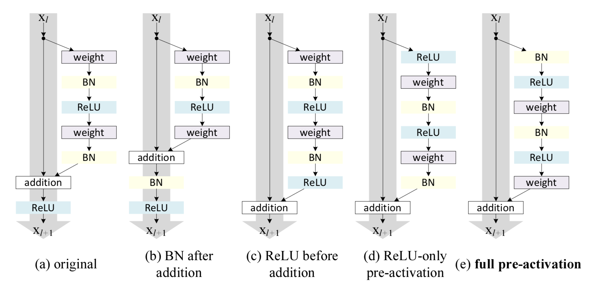
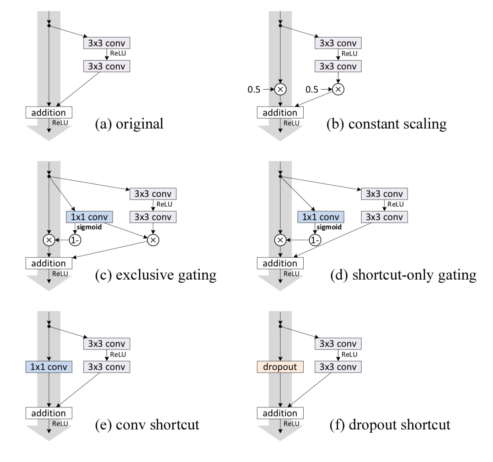
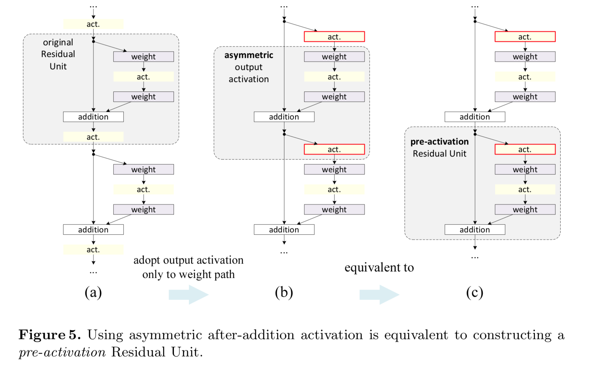

Identity Mappings in Deep Residual Networks¶
K. He, X. Zhang, S. Ren, and J. Sun, “Identity Mappings in Deep Residual Networks,” in Computer Vision – ECCV 2016, 2016, pp. 630–645.
本文的主旨：
The forward and backward signals can be directly propagated from one block to any other block, when using identity mappings as the skip connections and after-addition activation. A series of ablation experiments support the importance of these identity mappings.
以下是一些用于测试的残差网络单元， Residual units
残差网络单元的数学表示，
通过使用不同的 \(\mathcal{h}(\cdot)\) 和 \(\mathcal{f}(\cdot)\) 我们就可以构造出不同的残差单元。
这里有一个比较有意思的观点，通常来讲，我们把 BN 或者 ReLU 都是当作 post-activation 来用，但是当，网络一层一层搭起来以后，夹在两个参数层中间的 ReLU 或 BN 既可以当作是上一层的 “post-activation” 也可以当作是下一层的 “pre-activation”， 除了开头和结尾的情况例外。 因此这里就以 pre-activation 的方式来看待这些 nonlinear mapping.
本文中使用 \(\mathcal{h} = \mathcal{f} = \text{identity mapping}\) 来作 skip connections 和 after-addition activation. 这时，就有
有了该简化，就可以看到在前向传播中，有 signals can be directly propagated from one block to any other block,
在后向传播中，有 signals can be directly propagated from one block to any other block,
这里重要的是，不是对于特定的 \(L\) 和 \(l\) 才成立上述结论，而是对于任意的 \(L\) 和 \(l\) 都成立. 这可能是使得 ResNet 比较好训练的原因。
思考：这样的话 Dense Net 似乎就有点尴尬了？
另外，如果 skip connections \(\mathcal{h}\) 不是 identity mapping 的话，即使是最简单的线性改变
也会产生诸如梯度爆炸或者消失的问题。在梯度消失的情形下，这相当于 强迫信息通过参数层 传递。 在更复杂的情形下，文章通过实验的方法说明，非 identity mapping 会给优化带来困难。 Shortcut 代表了信息最容易通过的渠道，因此，在 shortcut 中使用复杂的 mapping 会阻碍优化。
事实上，其中某些复杂的 shortcut 包含了 identity mapping ，因此该模型的表达能力实际上提升了，然而最终的结果却表现不好，说明复杂的 shortcut 影响的是优化的过程。
在讨论了 identity mapping shortcut 的重要性之后，文章再讨论了 after-addition 之后的 activation 的影响。 如果我们不是在原来 ReLU 的基础上简化，而是增加一个 BN 层，那么结果将变得更差，这说明，在 after-addition 的 activation 的复杂化也会影响优化的难度。 因此，我们应该试着简化这部分 activation 而不是怎加复杂性。
文章首先考虑了把原先的 ReLU 只作用到右侧的参数层上，然后通过转换视角，把 post-activation 当做 pre-activation 看待来处理问题，如下图所示。
文章比较了把 BN 和 ReLU 都作为 pre-activation 和只把 ReLU 作为 pre-activation 的 configuration ，这对于有分支的网络来说是不同的，结果显示前者比较好，可能是以为后者的第一个 ReLU 因为上面的 addition 的关系，没有享受到 BN 带来的好处。
本文清晰的展示了作者的思路，结果也显示了 pre-activation 确实都改进了结果。 我也比较认同作者的观点，在 shortcut 那一条路上保持 clean 的 identity mapping 以方便信息在前向和后向传播中，能够毫无阻碍的从任意一层传递到任意另一层，确实可以在一定程度上是的优化的难度降低。
文章关于 pre-activation 的两点总结：
- Ease of optimization
- 相比原先的 ResNet 网络，pre-activation 版本在优化初期 loss 就下降得很快
- Reducing overfitting
- training error 比原先的 ResNet 的网络高，但是 test error 却更低，这是一个比较有利的证据，可能的原因是 BN 在原先的 ResNet 中并没有对相加后的信号做 Normalization 处理，而在 pre-activation 的版本中，Normalization 则得到了充分的利用，每个分支的 weight layer 前都有 BN ，因此， BN 的 regularization 的作用得到了充分的发挥。